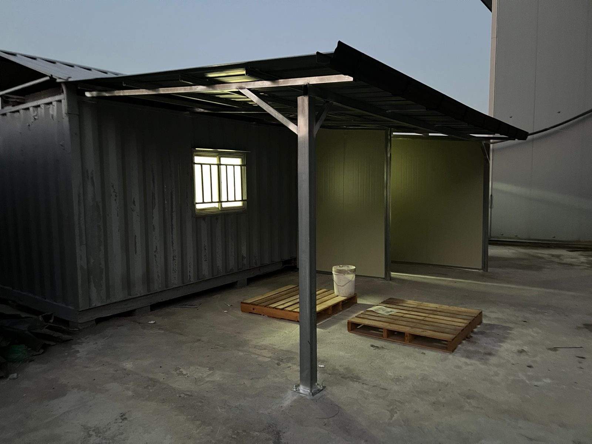
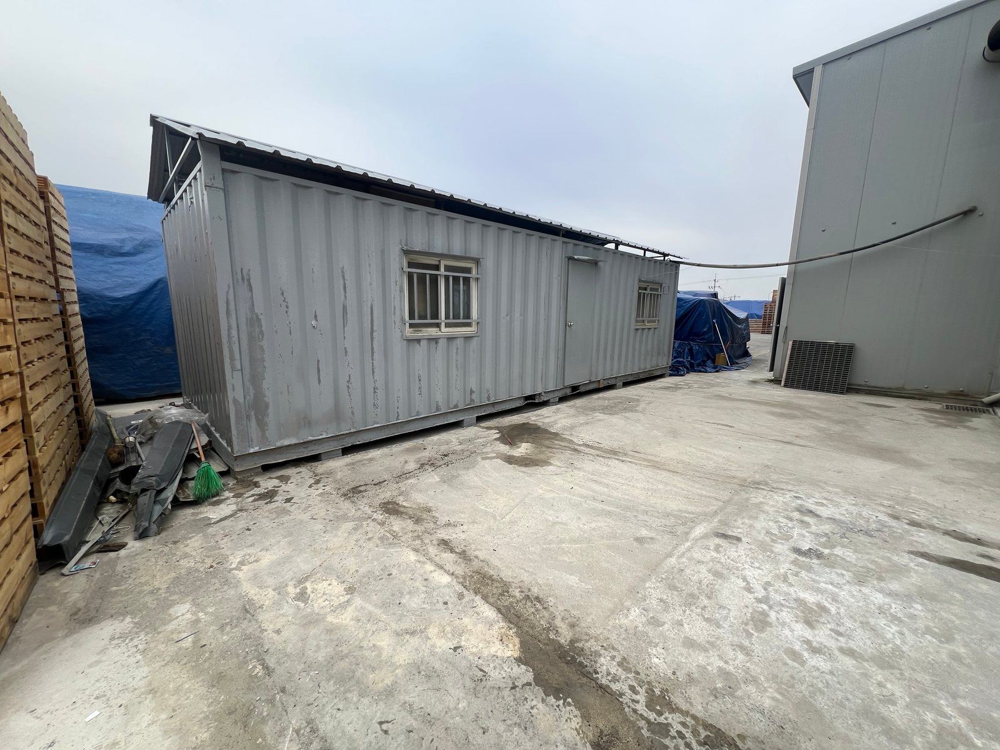
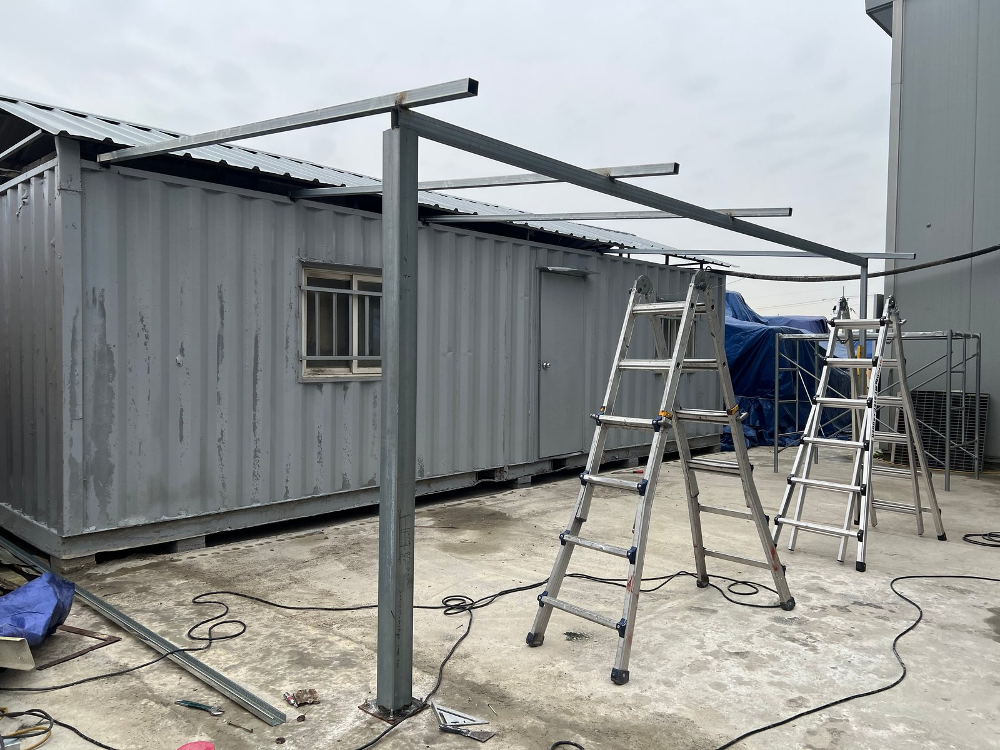
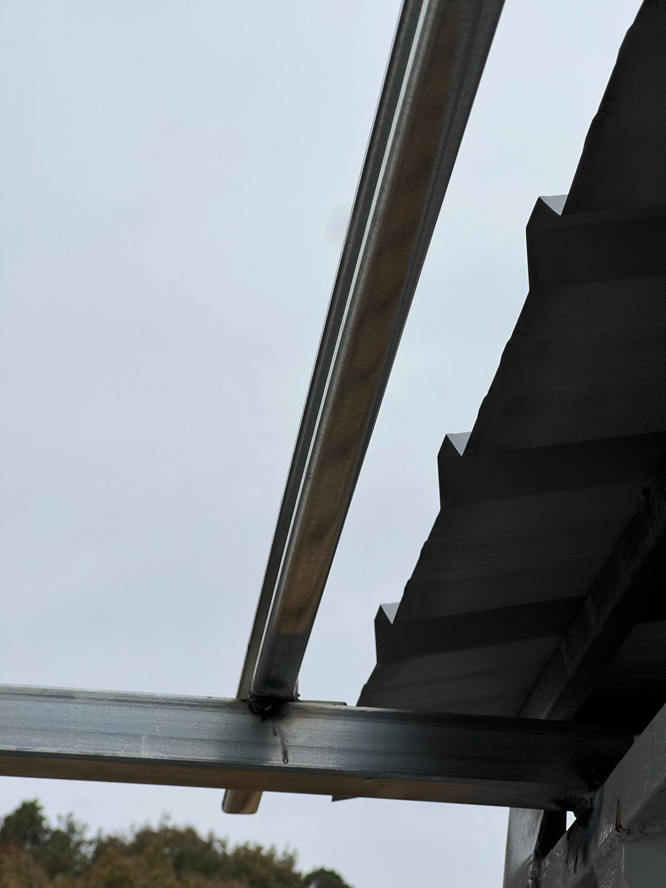
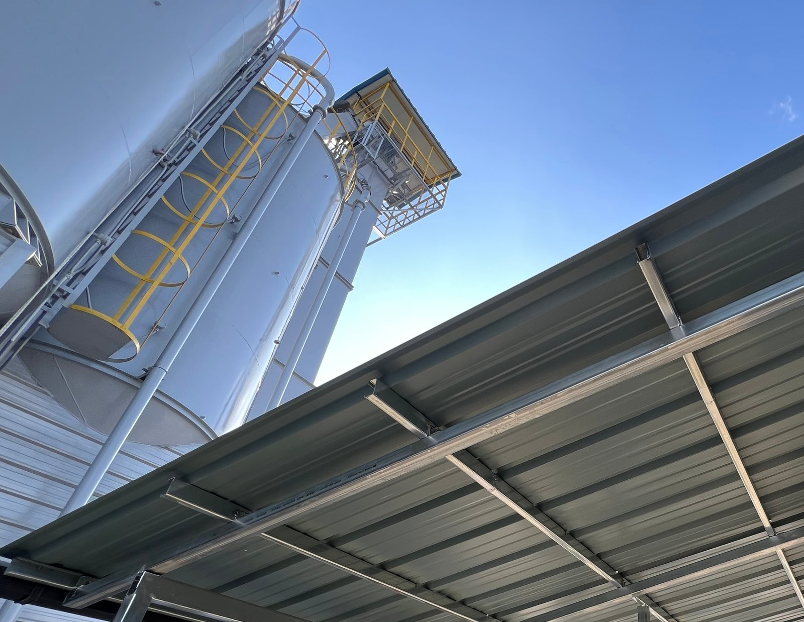
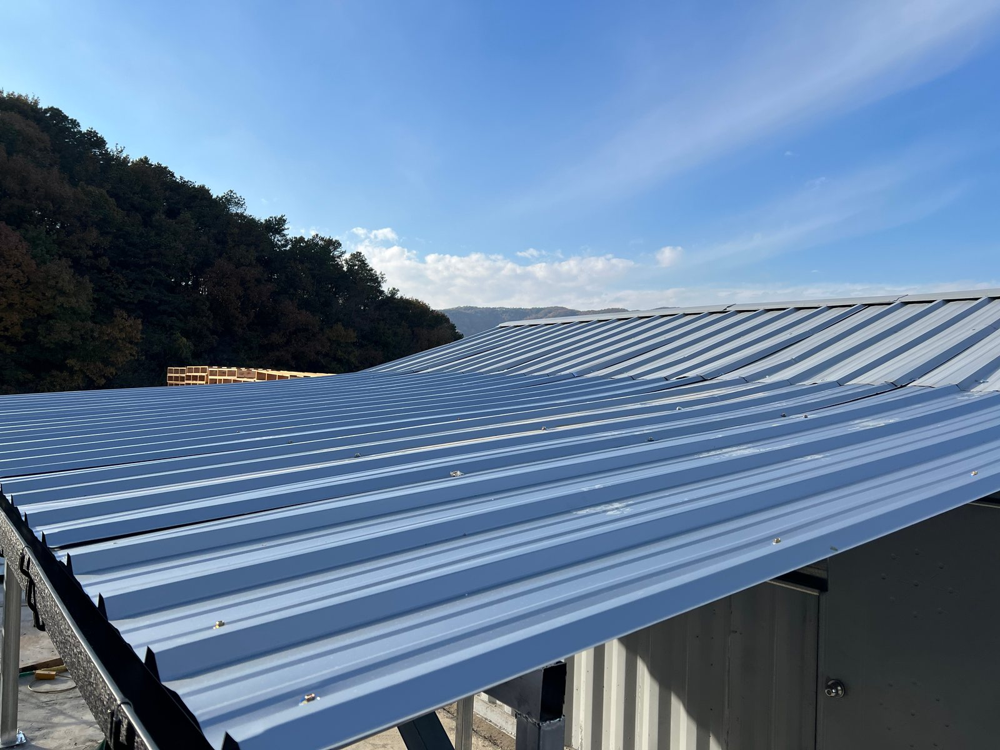
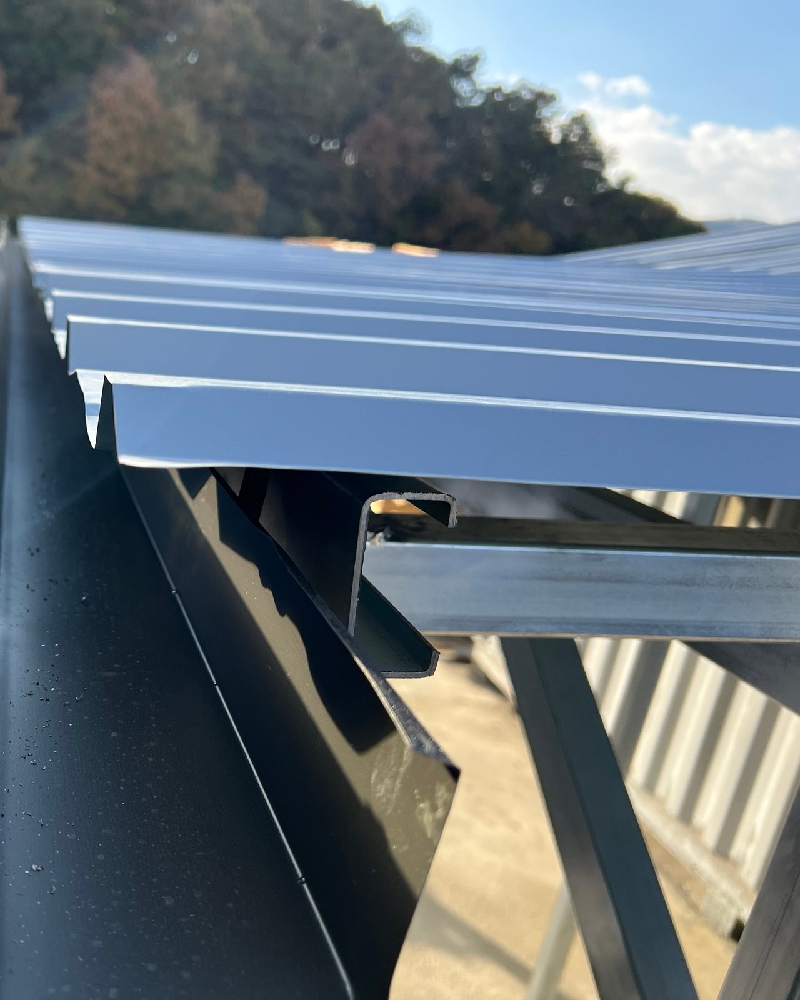
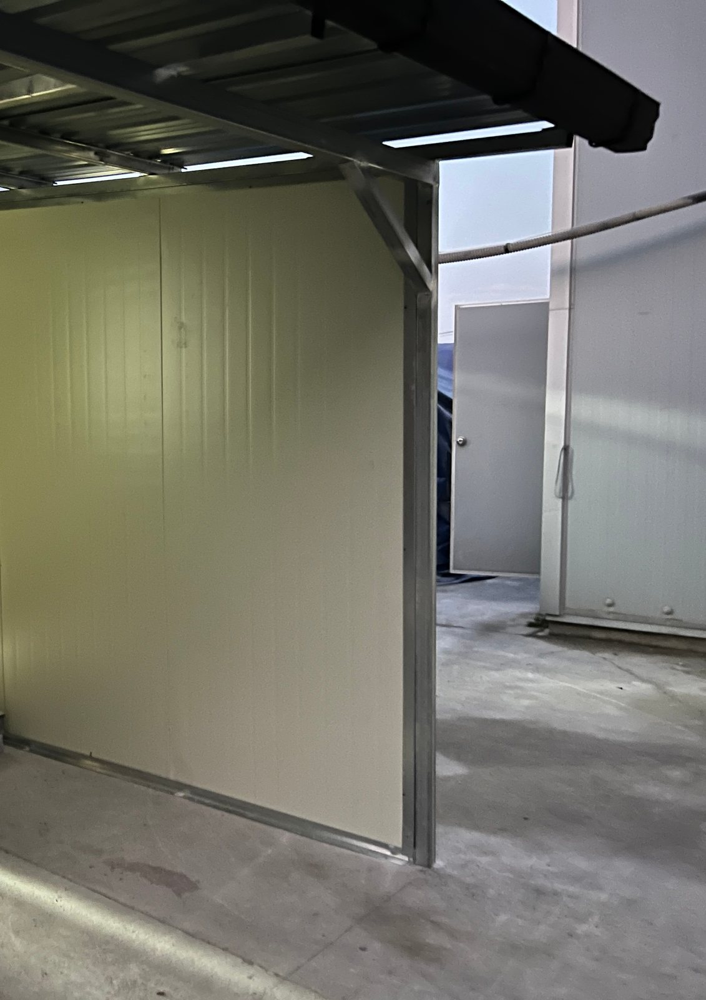

충남 공주 공장 컨테이너 옆 판넬 지붕·벽체｜각관 기둥을 세워 알판 지붕과 판넬 벽으로 마감

현장 작업 한눈에 보기
- 현장
- 충남 공주시 공장 마당 · 컨테이너 사무실 옆
- 문제
- 컨테이너 사무실 옆 지붕 없는 콘크리트 마당
출입문 앞도 그대로 드러난 상태 - 작업
- 각관 기둥·보 세우기와 용접
받침 철재 위 알판 지붕·지붕 끝 물받이
지붕 아래 한쪽 판넬 벽 세우기 - 결과
- 컨테이너 옆에 지붕과 판넬 벽이 생긴 공간(11월 9일 저녁 사진)
지붕 기울기·단열재 종류는 미기재
충남 공주시의 한 공장 마당에서 컨테이너 사무실 옆에 지붕과 벽을 만든 기록입니다. 각관 기둥과 보를 세우고 알판으로 지붕을 덮은 뒤, 지붕 아래 한쪽을 판넬 벽으로 막았습니다. 11월 9일 하루 동안 찍은 실제 사진 8장으로 소개합니다.
1. 작업 전 컨테이너 옆 마당
충남 공주시의 한 공장 마당에서 한 작업입니다. 2026년 11월 9일 아침부터 저녁까지 찍은 사진을 시간 순서대로 소개합니다.
작업 전 모습입니다. 컨테이너 사무실 옆이 지붕 없는 콘크리트 마당으로 비어 있었고, 출입문 앞도 그대로 드러나 있었습니다.

2. 각관 기둥과 보 세우기
마당 쪽에 각관 기둥을 세우고, 기둥에서 컨테이너 위쪽으로 각관 보를 걸쳤습니다. 이 기둥과 보가 지붕을 받치는 뼈대가 됩니다.

3. 지붕 받침 철재 용접
보 위에는 알판을 받칠 철재를 여러 줄 올려 용접으로 고정했습니다. 사진 오른쪽은 기존 컨테이너의 지붕 끝입니다.

4. 아래에서 본 지붕
알판을 덮은 뒤 지붕 아래에서 올려다본 모습입니다. 보와 받침 철재가 알판을 받치고 있습니다.

5. 알판으로 덮은 지붕
위에서 본 지붕입니다. 골이 진 알판을 이어 덮어 컨테이너 옆 마당 위를 지붕으로 덮었습니다.

6. 지붕 끝 물받이
지붕 끝에는 검은색 물받이를 달았습니다. 지붕에서 흘러내리는 빗물을 받는 자리입니다.

7. 판넬로 세운 벽
지붕 아래 한쪽은 50T 판넬로 벽을 세워 막았습니다. 판넬 아래와 모서리는 철물로 잡아 세웠습니다. 해 질 무렵 안쪽에서 찍은 사진입니다.

8. 작업을 마친 모습
같은 날 저녁, 작업을 마친 모습입니다. 컨테이너 옆에 각관 기둥과 알판 지붕이 생겼고, 지붕 아래 오른쪽 끝은 판넬 벽으로 막았습니다.
9. 확인한 범위와 상담 안내
이번 기록은 11월 9일 하루 동안 찍은 사진으로 확인되는 범위입니다. 지붕 기울기와 판넬 속 단열재 종류는 자료가 없어 적지 않았습니다.
컨테이너나 창고 옆에 지붕을 달거나 벽을 막아 공간을 만들고 싶으시면, 설치할 자리 전체와 기존 건물·컨테이너와 만나는 부분을 찍어 상담해 주세요.